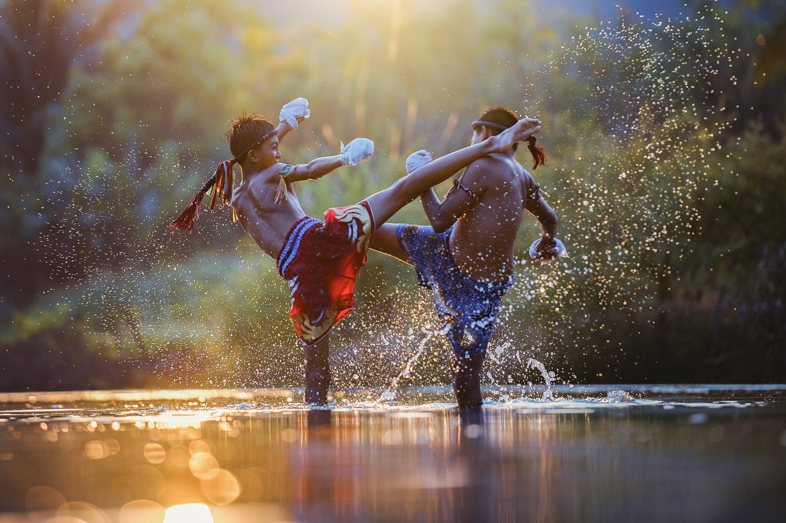
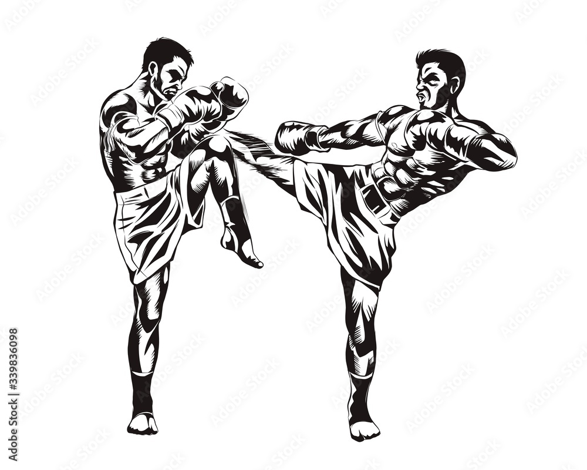

La boxe THAI

La Boxe Thaï, plus qu’un sport, un art de vivre.
Originaire de Thaïlande, la boxe thaïlandaise — ou Muay Thaï — est une discipline de combat complète utilisant les poings, les coudes, les genoux et les tibias. Alliant puissance, technique et stratégie, elle développe la condition physique, la coordination et la maîtrise de soi. Pratiquée dans le monde entier, elle séduit autant pour son intensité que pour les valeurs qu’elle véhicule : respect, courage et discipline. Ce site a pour but de faire découvrir ce sport fascinant, son histoire, ses techniques et sa culture.
